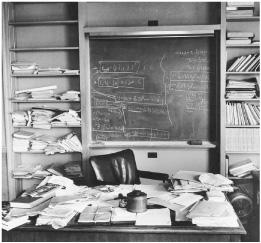

Einstein’s study, as he left it
爱因斯坦去世时的书房
When Sir Isaac Newton died, his body lay in state in the Jerusalem chamber of Westminster Abbey, and his pallbearers included the lord high chancellor, two dukes, and three earls. Einstein could have had a similar funeral, glittering with dignitaries from around the world. Instead, in accordance with his wishes, he was cremated in Trenton on the afternoon that he died, before most of the world had heard the news. There were only twelve people at the crematorium, including Hans Albert Einstein, Helen Dukas, Otto Nathan, and four members of the Bucky family. Nathan recited a few lines from Goethe, and then took Einstein’s ashes to the nearby Delaware River, where they were scattered.1
当牛顿爵士逝世时，他的遗体安卧在威斯敏斯特教堂的耶路撒冷寝宫，他的护柩者包括大法官、两位公爵和三位伯爵。爱因斯坦的葬礼本来也可以有如此规格，让全世界的高官显贵云集。但根据他的遗愿，去世那天下午即在特伦顿火化，那时还没有对外公布消息。在场的只有12个人，包括汉斯·阿尔伯特、杜卡斯、纳坦和布基家的4个成员。纳坦朗诵了歌德的几句诗，然后把爱因斯坦的骨灰撒入附近的特拉华河（Delaware River）。
“No other man contributed so much to the vast expansion of 20th century knowledge,” President Eisenhower declared. “Yet no other man was more modest in the possession of the power that is knowledge, more sure that power without wisdom is deadly.” The New York Times ran nine stories plus an editorial about his death the next day: “Man stands on this diminutive earth, gazes at the myriad stars and upon billowing oceans and tossing trees—and wonders. What does it all mean? How did it come about? The most thoughtful wonderer who appeared among us in three centuries has passed on in the person of Albert Einstein.”2
“对于20世纪知识的巨大增长，没有人的贡献比他更多，”艾森豪威尔总统称，“但在对知识力量的拥有上，没有人比他更谨慎，他比别人更确信，缺乏智慧的力量是致命的。”第二天，《纽约时报》就爱因斯坦的逝世刊发了九篇报道和一篇社论：“人站在这个微不足道的地球上，凝望着浩瀚的星空、巨浪翻腾的海洋和摇曳多姿的树木，不禁浮想联翩。这一切意味着什么？它是如何产生的？300年来，我们中间出现的最有思想的探索者莫过于阿尔伯特·爱因斯坦。”
Einstein had insisted that his ashes be scattered so that his final resting place would not become the subject of morbid veneration. But there was one part of his body that was not cremated. In a drama that would seem farcical were it not so macabre, Einstein’s brain ended up being, for more than four decades, a wandering relic.3
爱因斯坦坚持撒掉骨灰，以免他最后的安息之地成为众人膜拜的场所。然而，他有一部分身体没有被火化。在40多年的时间里，爱因斯坦的大脑竟然成了居无定所的遗物。整个过程无异于一场恐怖的闹剧。
Hours after Einstein’s death, what was supposed to be a routine autopsy was performed by the pathologist at Princeton Hospital,Thomas Harvey, a small-town Quaker with a sweet disposition and rather dreamy approach to life and death. As a distraught Otto Nathan watched silently, Harvey removed and inspected each of Einstein’s major organs, ending by using an electric saw to cut through his skull and remove his brain. When he stitched the body back up, he decided, without asking permission, to embalm Einstein’s brain and keep it.
就在爱因斯坦去世后几小时，普林斯顿医院的病理学家托马斯·哈维做了所谓例行的尸体解剖。哈维是一个褊狭的贵格会教徒，他性情温柔，但对生死有一种相当空幻的看法。当纳坦心烦意乱地等待时，哈维检查了爱因斯坦身上的主要器官，并将其一一取走，最后用电锯切开了他的头骨，取走了他的大脑。他把身体重新缝合后，未经允许便决定给爱因斯坦的大脑做防腐处理。
The next morning, in a fifth-grade class at a Princeton school, the teacher asked her students what news they had heard. “Einstein died,” said one girl, eager to be the first to come up with that piece of information. But she quickly found herself topped by a usually quiet boy who sat in the back of the class. “My dad’s got his brain,” he said.4
第二天早上，在普林斯顿的一所中学里，五年级的一个班正在上课，老师问同学们听说了什么新闻。“爱因斯坦去世了。”一个女孩自豪地说，她认为自己最先给出了这一信息。但坐在后排的一个文静的男孩却说：“我爸爸拿到了他的大脑。”
Nathan was horrified when he found out, as was Einstein’s family. Hans Albert called the hospital to complain, but Harvey insisted that there may be scientific value to studying the brain. Einstein would have wanted that, he said. The son, unsure what legal and practical rights he now had in this matter, reluctantly went along.5
纳坦和爱因斯坦的家人在发现这一切时惊骇万分。汉斯·阿尔伯特给医院打了电话，但哈维坚持说对大脑进行研究也许有科学价值。他说，这也许符合爱因斯坦的愿望。汉斯·阿尔伯特弄不清自己在这件事情上有什么实际权利，便不情愿地同意了。
Soon Harvey was besieged by those who wanted Einstein’s brain or a piece of it. He was summoned to Washington to meet with officials of the U.S. Army’s pathology unit, but despite their requests he refused to show them his prized possession. Guarding it had become a mission. He finally decided to have friends at the University of Pennsylvania turn part of it into microscopic slides, and so he put Einstein’s brain, now chopped into pieces, into two glass cookie jars and drove it there in the back of his Ford.
不久，人们纷纷向哈维索取爱因斯坦的大脑或其中的一部分。他接到了华盛顿美国陆军病理组官员们的传唤，但他拒不展示这份得意的财产。保卫它已经成为一种使命。他最终决定让宾州大学的朋友将它的一部分制成显微切片，于是他将切碎的爱因斯坦大脑装入了两个广口瓶，将其放在福特车的后备箱里带到那儿。
Over the years, in a process that was at once guileless as well as bizarre, Harvey would send off slides or chunks of the remaining brain to random researchers who struck his fancy. He demanded no rigorous studies, and for years none were published. In the meantime, he quit Princeton Hospital, left his wife, remarried a couple of times, and moved around from New Jersey to Missouri to Kansas, often leaving no forwarding address, the remaining fragments of Einstein’s brain always with him.
后来，哈维将剩余大脑的切片或小块不断分发给那些能够激发其幻想的研究者。他没有进行严密精确的研究，多年来没有发表任何研究结果。在这期间，他辞去了普林斯顿医院的职务，与妻子离婚，又数次再婚，从新泽西搬到密苏里，再从密苏里搬到堪萨斯，经常不留新地址，但一直与剩余的爱因斯坦大脑寸步不离。
Every now and then, a reporter would stumble across the story and track Harvey down, causing a minor media flurry. Steven Levy, then of New Jersey Monthly and later of Newsweek, found him in 1978 in Wichita, where he pulled a Mason jar of Einstein’s brain chunks from a box labeled “Costa Cider” in the corner of his office behind a red plastic picnic cooler.6 Twenty years later, Harvey was tracked down again, by Michael Paterniti, a free-spirited and soulful writer for Harper’s, who turned his road trip in a rented Buick across America with Harvey and the brain into an award-winning article and best-selling book, Driving Mr. Albert.
不时会有记者碰巧看到这个消息并追踪到哈维，从而掀起小小的媒体风暴。1978年，当时在《新泽西月刊》工作，后来在《新闻周刊》任职的史蒂文·利维在苏联西伯利亚地区的赤塔（Wichita）地区找到了哈维。他看到，哈维从其办公室角落的一个标有“科斯塔牌苹果酒”（Costa Cider）的箱子里取出了一大瓶爱因斯坦的大脑，将其放在一个红色塑料冷藏箱背后。 20年后，哈维又被《时尚芭莎》杂志的一个精力过人的专栏作家帕特尼提追踪到。根据与哈维连同爱因斯坦的大脑乘坐租来的别克车穿越美国的旅行经历，帕特尼提写了一篇获奖文章和一本畅销书《运送阿尔伯特先生》。
Their destination was California, where they paid a call on Einstein’s granddaughter, Evelyn Einstein. She was divorced, marginally employed, and struggling with poverty. Harvey’s perambulations with the brain struck her as creepy, but she had a particular interest in one secret it might hold. She was the adopted daughter of Hans Albert and his wife Frieda, but the timing and circumstances of her birth were murky. She had heard rumors that made her suspect that possibly, just possibly, she might actually be Einstein’s own daughter. She had been born after Elsa’s death, when Einstein was spending time with a variety of women. Perhaps she had been the result of one of those liaisons, and he had arranged for her to be adopted by Hans Albert. Working with Robert Schulmann, an early editor of the Einstein papers, she hoped to see what could be learned by studying the DNA from Einstein’s brain. Unfortunately, it turned out that the way Harvey had embalmed the brain made it impossible to extract usable DNA. And so her questions were never answered.7
他们的目的地是加利福尼亚，在那里他们拜访了爱因斯坦的孙女伊夫林·爱因斯坦。她已经离婚，几乎失业，生活穷困潦倒。哈维带着爱因斯坦的大脑来访使她感到毛骨悚然，但她对这其中可能埋藏的一个秘密怀有极大兴趣。她是汉斯·阿尔伯特和妻子弗里达的养女，但她的出生时间和情况均不详。曾有传言指，她或许是爱因斯坦的亲生女儿。她在爱尔莎去世后出生，那时和爱因斯坦交往的有几个女人，或许她就是这其中某一次暧昧关系的产物，然后爱因斯坦让汉斯·阿尔伯特来收养她。伊夫林与《爱因斯坦全集》的前任主编舒尔曼合作，希望通过研究爱因斯坦大脑的DNA而弄清真相。可惜，哈维对大脑进行防腐处理的方式使得可用的DNA无法析取出来。她的问题成了一桩悬案。
In 1998, after forty-three years as the wandering guardian of Einstein’s brain, Thomas Harvey, by then 86, decided it was time to pass on the responsibility. So he called the person who currently held his old job as pathologist at Princeton Hospital and went by to drop it off.8
1998年，在守卫了爱因斯坦的大脑43年后，86岁的哈维决定放手了。他给当时普林斯顿医院接任他的病理学家打电话，让他把东西取走。
Of the dozens of people to whom Harvey doled out pieces of Einstein’s brain over the years, only three published significant scientific studies. The first was by a Berkeley team led by Marian Diamond.9 It reported that one area of Einstein’s brain, part of the parietal cortex, had a higher ratio of what are known as glial cells to neurons. This could, the authors said, indicate that the neurons used and needed more energy.
多年以来，在从哈维这里获得爱因斯坦大脑的数十个人当中，只有三个人发表了重要的科学研究结果。第一篇是由玛丽安·戴蒙德领导的一个伯克利的小组。 它报道说，爱因斯坦大脑的顶叶皮层有一个区域，神经胶质细胞与神经元的比例较高。作者说，这可能暗示神经元消耗和需要更多能量。
One problem with this study was that his 76-year-old brain was compared to eleven others from men who had died at an average age of 64. There were no other geniuses in the sample to help determine if the findings fit a pattern. There was also a more fundamental problem: with no ability to trace the development of the brain over a lifetime, it was unclear which physical attributes might be the cause of greater intelligence and which might instead be the effect of years spent using and exercising certain parts of the brain.
这项研究的一个问题是，与76岁的爱因斯坦的大脑进行比较的是平均去世年龄为64岁的另外11个男人的大脑。样本中没有其他天才可以帮助确定其结论是否符合一种样式。此外，还有一个更加基本的问题，那就是我们无法追溯大脑在人的整个一生中的发育，弄不清楚更高的智能是由什么物理性质引起的，以及长年使用和训练大脑的某些部分会产生什么结果。
A second paper, published in 1996, suggested that Einstein’s cerebral cortex was thinner than in five other sample brains, and the density of his neurons was greater. Once again, the sample was small and evidence of any pattern was sketchy.
第二篇论文发表于1996年，它表明，爱因斯坦的大脑皮质要比其他五个样本的大脑皮质更薄，神经元的密度也更大。但这次的样本数同样太少，只能描绘出大略的样式。
The most cited paper was done in 1999 by Professor Sandra Witelson and a team at McMaster University in Ontario. Harvey had sent her a fax, unprompted, offering samples for study. He was in his eighties, but he personally drove up to Canada by himself, transporting a hunk that amounted to about one-fifth of Einstein’s brain, including the parietal lobe.
引用率最高的论文是安大略麦克马斯特大学的桑德拉·维特森教授和他的小组于1999年完成的。哈维曾经主动发给她一个传真，表示愿意提供样本以供研究。那时的哈维已经年逾八旬，但还是亲自驱车来到加拿大，大约运送了包括顶叶在内的爱因斯坦大脑的1/5。
When compared to brains of thirty-five other men, Einstein’s had a much shorter groove in one area of his inferior parietal lobe, which is thought to be key to mathematical and spatial thinking. His brain was also 15 percent wider in this region. The paper speculated that these traits may have produced richer and more integrated brain circuits in this region.10
通过与其他35个男人的大脑相比较，爱因斯坦的内顶叶有一个区域沟槽要短得多，这里被认为是控制数学和空间思考的关键部位。他大脑的这个区域也要比别人宽15%。这篇论文猜想，这些特征也许使得这一区域的大脑回路更密集、更完整。
But any true understanding of Einstein’s imagination and intuition will not come from poking around at his patterns of glia and grooves. The relevant question was how his mind worked, not his brain.
然而，研究爱因斯坦的神经胶质和沟槽的样式，永远不可能使我们真正理解爱因斯坦的想象力和直觉。要紧的问题是他的“心灵”如何运作，而不是他的大脑。
The explanation that Einstein himself most often gave for his mental accomplishments was his curiosity. As he put it near the end of his life, “I have no special talents, I am only passionately curious.”11
爱因斯坦本人对其思想成就最常给出的解释是他的好奇心。正如他在临终时所说：“我并没有什么特别的天赋，只是极为好奇罢了。”
That trait is perhaps the best place to begin when sifting through the elements of his genius. There he is, as a young boy sick in bed, trying to figure out why the compass needle points north. Most of us can recall seeing such needles swing into place, but few of us pursue with passion the question of how a magnetic field might work, how fast it might propagate, how it could possibly interact with matter.
综观爱因斯坦天才的各个要素，也许从这一特征谈起是最佳之选。小时候，他经常纳闷罗盘针为何会指向北。我们大多数人也能回忆起看到罗盘针摇摆到位的样子，但很少有人会充满热情地研究磁场如何工作，它传播有多快，如何与物质发生相互作用等问题。
What would it be like to race alongside a light beam? If we are moving through curved space the way a beetle moves across a curved leaf, how would we notice it? What does it mean to say that two events are simultaneous? Curiosity, in Einstein’s case, came not just from a desire to question the mysterious. More important, it came from a childlike sense of marvel that propelled him to question the familiar, those concepts that, as he once said, “the ordinary adult never bothers his head about.”12
追赶一束光会是什么样子？假如我们像甲虫爬过弯曲的树叶一样穿过弯曲的空间，我们如何能够发觉这一点？说两个事件同时发生是什么意思？就爱因斯坦而言，好奇心不仅来自于追问神秘现象的欲望，更重要的是，它来自于一种孩子般的惊异感，这种感觉促使他对司空见惯的事物提出质疑，对“普通成年人懒得考虑的”那些概念提出质疑。
He could look at well-known facts and pluck out insights that had escaped the notice of others. Ever since Newton, for example, scientists had known that inertial mass was equivalent to gravitational mass. But Einstein saw that this meant that there was an equivalence between gravity and acceleration that would unlock an explanation of the universe.13
他可以从司空见惯的事实中得出别人注意不到的洞见。例如自牛顿以来，科学家们都知道惯性质量等于引力质量。但爱因斯坦看到，这意味着引力与加速之间存在着一种等效，可以用来对宇宙做出解释。
A tenet of Einstein’s faith was that nature was not cluttered with extraneous attributes. Thus, there must be a purpose to curiosity. For Einstein, it existed because it created minds that question, which produced an appreciation for the universe that he equated with religious feelings. “Curiosity has its own reason for existing,” he once explained. “One cannot help but be in awe when one contemplates the mysteries of eternity, of life, of the marvelous structure of reality.”14
爱因斯坦的一个信念是，大自然没有多余的属性。因此，好奇心必定是有用途的。在爱因斯坦看来，好奇心之所以存在，是因为它创造了可以进行质疑的心灵，使得我们可以欣赏宇宙，他将这等同于宗教情感。“好奇心有其自身存在的理由，”他曾经说，“当一个人沉思永恒、生命、世界的精妙结构等奥秘时，只能感到敬畏。”
From his earliest days, Einstein’s curiosity and imagination were expressed mainly through visual thinking—mental pictures and thought experiments—rather than verbally. This included the ability to visualize the physical reality that was painted by the brush strokes of mathematics. “Behind a formula he immediately saw the physical content, while for us it only remained an abstract formula,” said one of his first students.15 Planck came up with the concept of the quanta, which he viewed as mainly a mathematical contrivance, but it took Einstein to understand their physical reality. Lorentz came up with mathematical transformations that described bodies in motion, but it took Einstein to create a new theory of relativity based on them.
从早年开始，爱因斯坦的好奇心和想象力就主要通过形象思维——心理图像和思想实验——而非言语来表达，比如能够设想与数学相联系的物理实在。“在数学公式背后，他能够立即看出物理内容，而在我们眼中，它仍然是一个抽象的公式。”他早年的一个学生说。 普朗克提出了量子概念，认为它主要是一种数学发明，但爱因斯坦却理解了它的物理实在性。洛伦兹提出了描述运动物体的数学变换，但爱因斯坦却基于这些变换创造了一种新的相对性理论。
One day during the 1930s, Einstein invited Saint-John Perse to Princeton to find out how the poet worked. “How does the idea of a poem come?” Einstein asked. The poet spoke of the role played by intuition and imagination. “It’s the same for a man of science,” Einstein responded with delight. “It is a sudden illumination, almost a rapture. Later, to be sure, intelligence analyzes and experiments confirm or invalidate the intuition. But initially there is a great forward leap of the imagination.”16
20世纪30年代的一天，爱因斯坦邀请诗人圣-琼·佩斯到普林斯顿访问，想看看诗人是如何工作的。“诗的观念如何形成？”爱因斯坦问。佩斯谈到了直觉和想象的作用。“研究科学的人也是如此，”爱因斯坦愉快地应和，“那时眼前会忽然一亮，如狂喜一般。尽管到了后来，理智会对直觉进行分析，实验会证实或否证直觉。但在一开始，想象力的确有很大的跃升。”
There was an aesthetic to Einstein’s thinking, a sense of beauty. And one component to beauty, he felt, was simplicity. He had echoed Newton’s dictum “Nature is pleased with simplicity” in the creed he declared at Oxford the year he left Europe for America: “Nature is the realization of the simplest conceivable mathematical ideas.”17
爱因斯坦的思想中有一种美学标准和美感。他感到，简单性是美的一个要素。在离欧赴美的那一年，他曾在牛津宣布过他的信条：“自然是可能设想的最简单的数学思想的实现。”从而呼应了牛顿的格言“自然喜欢简单性”。
Despite Occam’s razor and other philosophical maxims along these lines, there is no self-evident reason this has to be true. Just as it is possible that God might actually play dice, so too it is possible that he might delight in Byzantine complexities. But Einstein didn’t think so. “In building a theory, his approach had something in common with that of an artist,” said Nathan Rosen, his assistant in the 1930s. “He would aim for simplicity and beauty, and beauty for him was, after all, essentially simplicity.”18
尽管奥卡姆的剃刀以及其他哲学格言也是同样思路，但并没有什么自明的理由表明其必然为真。或许上帝真的在掷骰子，他也许真就喜欢复杂性。但爱因斯坦并不这样认为。“在构建一种理论时，他的做法与艺术家有异曲同工之妙，”他在20世纪30年代的助手罗森说，“他追求简单性和美，在他看来，美本质上首先就是简单性。”
He became like a gardener weeding a flower bed. “I believe what allowed Einstein to achieve so much was primarily a moral quality,” said physicist Lee Smolin. “He simply cared far more than most of his colleagues that the laws of physics have to explain everything in nature coherently and consistently.”19
他的做法很像是一位在花坛除草的园丁。“我认为使爱因斯坦取得诸多成就的首先是一种道德品质，”物理学家李·斯莫林说，“他远比他的大多数同行更关注物理学定律必须融贯一致地解释自然中的万事万物。”
Einstein’s instinct for unification was ingrained in his personality and reflected in his politics. Just as he sought a unified theory in science that could govern the cosmos, so he sought one in politics that could govern the planet, one that would overcome the anarchy of unfettered nationalism through a world federalism based on universal principles.
爱因斯坦向往统一的本能深深植根于他的个性，同时也反映在他的政治见解中。他不仅在科学中寻求一种能够支配整个宇宙的统一理论，在政治中也同样寻求能够支配这个星球的统一理论，希望能够通过一种基于普遍原理的世界联邦制来克服不加限制的国家主义所导致的无政府状态。
Perhaps the most important aspect of his personality was his willingness to be a nonconformist. It was an attitude that he celebrated in a foreword he wrote near the end of his life to a new edition of Galileo. “The theme that I recognize in Galileo’s work,” he said, “is the passionate fight against any kind of dogma based on authority.”20
在他的个性中，也许最重要的是不愿意服从权威。这种态度可见于他在生命行将结束之时为新版的伽利略著作所写的一篇序言中。他说：“我在伽利略著作中所认识到的主题是，充满激情地反抗任何种类的基于权威的教条。”
Planck and Poincaré and Lorentz all came close to some of the breakthroughs Einstein made in 1905. But they were a little too confined by dogma based on authority. Einstein alone among them was rebellious enough to throw out conventional thinking that had defined science for centuries.
普朗克、庞加莱和洛伦兹都差点实现爱因斯坦1905年的某些突破，但他们都受制于权威教条的束缚。只有爱因斯坦有足够的反叛性，能够摒弃主宰科学数百年的传统思想。
This joyous nonconformity made him recoil from the sight of Prussian soldiers marching in lockstep. It was a personal outlook that became a political one as well. He bristled at all forms of tyranny over free minds, from Nazism to Stalinism to McCarthyism.
这种不服从不仅使他对普鲁士军人迈着整齐的步伐列队行进厌恶至极，也造就了他的一种政治信条。他痛恨对自由思想一切形式的专制，无论是纳粹主义、斯大林主义还是麦卡锡主义。
Einstein’s fundamental creed was that freedom was the lifeblood of creativity. “The development of science and of the creative activities of the spirit,” he said, “requires a freedom that consists in the independence of thought from the restrictions of authoritarian and social prejudice.” Nurturing that should be the fundamental role of government, he felt, and the mission of education.21
爱因斯坦的基本信条是，自由是创造性的源泉。“科学的发展以及精神的创造性活动都要求一种自由，这种自由在于，思想独立于权威和社会偏见的限制。”他认为，培养这种自由应当是政府的基本职能和教育的使命。
There was a simple set of formulas that defined Einstein’s outlook. Creativity required being willing not to conform. That required nurturing free minds and free spirits, which in turn required “a spirit of tolerance.” And the underpinning of tolerance was humility—the belief that no one had the right to impose ideas and beliefs on others.
爱因斯坦的观点可以用一套简单的规则来说明。创造性要求我们不愿墨守成规。这便要求培养自由的思想和自由的精神，而这又反过来要求有一种“宽容精神”。支持宽容即为谦卑，即相信没有人有权将思想和信念强加于他人。
The world has seen a lot of impudent geniuses. What made Einstein special was that his mind and soul were tempered by this humility. He could be serenely self-confident in his lonely course yet also humbly awed by the beauty of nature’s handiwork. “A spirit is manifest in the laws of the universe—a spirit vastly superior to that of man, and one in the face of which we with our modest powers must feel humble,” he wrote. “In this way the pursuit of science leads to a religious feeling of a special sort.”22
世界上出现过许多特立独行的天才。爱因斯坦的特别之处在于他的思想和灵魂为这种谦卑所调节。他既可以在其孤独的旅程中镇定自若地充满自信，也会对大自然美妙的作品感到敬畏。“宇宙定律中显示出一种精神——这种精神远远超越于人的精神，在它面前，力量有限的我们必定会感到谦卑，”他说，“在这个意义上，对科学的追求导向了一种特殊类型的宗教感情。”
For some people, miracles serve as evidence of God’s existence. For Einstein it was the absence of miracles that reflected divine providence. The fact that the cosmos is comprehensible, that it follows laws, is worthy of awe. This is the defining quality of a “God who reveals himself in the harmony of all that exists.”23
在某些人看来，奇迹证明了上帝的存在。而在爱因斯坦看来，正是奇迹的不在场印证了上帝的眷顾。宇宙能够为我们所理解，并且服从着定律，这一事实让我们感到敬畏。这是“在万物的和谐中显现自身的上帝”的首要性质。
Einstein considered this feeling of reverence, this cosmic religion, to be the wellspring of all true art and science. It was what guided him. “When I am judging a theory,” he said, “I ask myself whether, if I were God, I would have arranged the world in such a way.”24 It is also what graced him with his beautiful mix of confidence and awe.
他认为这种敬畏感，这种宇宙宗教，是一切真正的艺术和科学的源泉。正是这种东西时时刻刻激励着他。他说：“当我判断一种理论时，我会问自己，如果我是上帝，我是否会以这种方式安排世界。” 正因如此，信心和敬畏才在他那里美妙地交织在一起。
He was a loner with an intimate bond to humanity, a rebel who was suffused with reverence. And thus it was that an imaginative, impertinent patent clerk became the mind reader of the creator of the cosmos, the locksmith of the mysteries of the atom and the universe.
他是一个深切关怀人类的孤独者，一个充满敬畏的反叛者。就这样，一个富于想象、特立独行的专利员读解了造物主的心灵，揭开了原子和宇宙的奥秘。